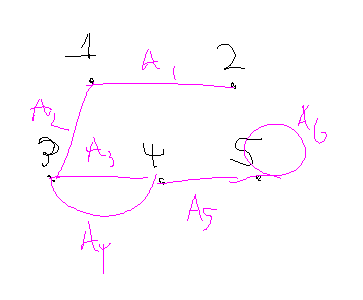
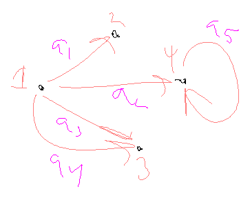

Informal Definition of a Graph: A graph is a nonempty set of nodes (vertices) and a set of arcs (edges) such that arc connects two nodes.
Our graphs will always have a finite number of nodes and arcs.
Formal Definition of a Graph: A graph is an ordered triple (N,A,g) where:
N = a nonempty set of nodes (vertices)
A = a set of arcs (edges)
g = a function associating which each arc a and an unordered pair x-y of nodes called the endpoints of a
Example
Sketch a graph having nodes \{ 1,2,3,4,5 \}, arcs \{ a_1, a_2, a_3, a_4, a_5, a_6 \}, and function g(a_1) = 1-2, g(a_2) = 1-3, g(a_3)=3-4, g(a_5)=4-5, and g(a_6)=5-5

Directed Graphs
Informal Definition of a Directed Graph: Graph where the arcs of a graph begin at one node and end at another.
Layman: The arcs have directions now.
Formal Definition of a Directed Graph: A directed graph is an ordered triple (N,A,g) where:
N = a nonempty set of nodes (vertices)
A = a set of arcs (edges)
g = a function associating with each arc a and ordered pair (x,y) of nodes where x is the initial point and y is the terminal point of a.
Example

g(a_1)=(1,2)
g(a_2)=(1,4)
g(a_3)=(1,3)
g(a_4)=(3,1)
g(a_5)=(5,5)
Tangent (???): Counting Edges of Graphs
Suppose a fully-connected undirected graph with n nodes. How many ways can you connect the nodes? C(n,2)
Suppose a non-self-pointing fully-connected directed graph with k nodes. How many ways can you connect the nodes? P(k,2)
Tree Terminology
Informal Definition of Tree: Special type of graph, very useful for representation of data
Search algorithms and databases are based on trees.
Formal Definition of Tree: Acyclic, connected graph with one node designated as the root of the tree.
Acyclic: There are no loops. In other words, there’s no way to traverse backwards once you’ve followed a node down.
You can’t have multiple roots within one tree.
If there is no designated root, the tree is considered nonrooted or free; and not that useful in computer science.
More Tree Terminology
Depth of Node: Length of the path from the root to a node.
The root itself has a depth of 0.
Depth (Height) of the Tree: Maximum depth of any node in the tree.
Leave: Node with no children
Internal Nodes: Non-leaves
Forest: Acyclic graph (not necessarily connected)
Binary Trees
Binary Tree: Tree where each node has at most two children.
Each child is designated as either the left child or right child.
Full Binary Tree: Tree where all internal nodes have two children and all leaves are at the same depth.
In other words: You can’t add more nodes without extending the height of the tree.
Complete Binary Tree: Almost-full binary tree where bottom level of the tree if filling from left to right but may not have its full complement of leaves.
Defining Trees Recursively
We can define trees recursively with a base case node and some rules to define children and parents.
Today’s Plan
Final exam will be cumulative
This lecture we’ll be finishing up graphs, reviewing midterm problems, and going over some homework problems.
Applications of Trees
Trees allow us to efficiently search a collection of records to locate a particular record or determine that a record is not in the collection:
Files stored on a computer are organized in a hierarchical (treelike) structure.
Algebraic expressions involving binary operations can be represented by labeled binary trees
Tree Traversal Algorithms
Traversal: Goal is to visit every node in the tree.
Preorder Traversal: The root of the tree is visited first, and then the subtrees are processed left to right, each in preorder.
Inorder Traversal: Left subtree is processed by an inorder traversal, then the root is visited, and then the remaining subtrees are processed from left to right, each in inorder.
Postorder Traversal: Root is visited last, after all subtrees have been processed from left to right in postorder.